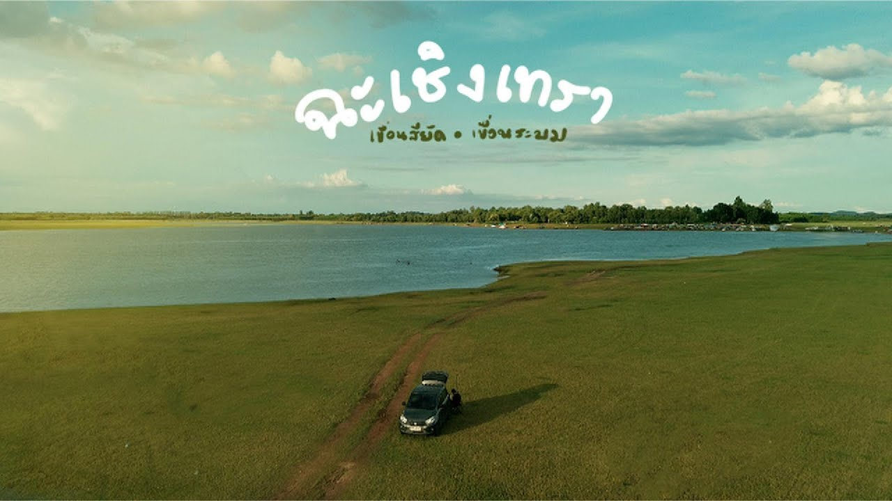
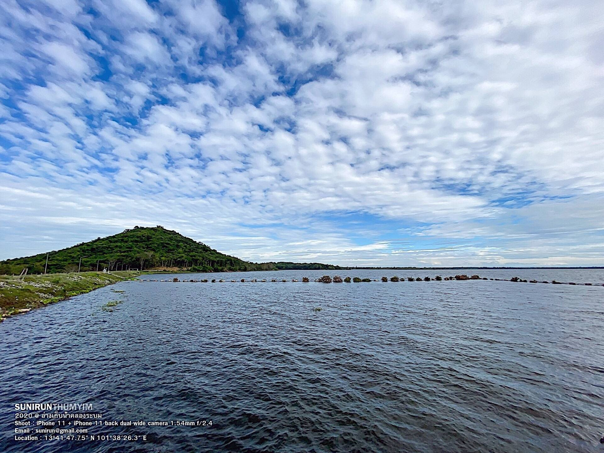

ทะเลน้ำจืดวังคู
แหล่งท่องเที่ยวธรรมชาติที่งดงาม น้ำใสสะอาด ล้อมรอบด้วยต้นไม้ร่มรื่น เหมาะสำหรับกิจกรรมทางน้ำและการพักผ่อน.
วิธีการเดินทาง
ใช้ถนนทางหลวงหมายเลข 304 มุ่งหน้าสู่อำเภอสนามชัยเขต จากนั้นขับตามป้ายบอกทางไปยังตำบลคลองเขื่อน.
วัดห้วยน้ำทรัพย์
วัดพระธาตุวาโย โดดเด่นด้วยพระธาตุที่ตั้งบนเนินเขา เป็นจุดชมวิวที่งดงามและศูนย์รวมจิตใจของชุมชน.
วิธีการเดินทาง
จากกรุงเทพฯ ใช้ถนนทางหลวงหมายเลข 304 มุ่งหน้าสู่อำเภอสนามชัยเขต แล้วเลี้ยวเข้าถนนรองไปยังตำบลทุ่งพระยา.

อ่างเก็บน้ำคลองระบม
แหล่งน้ำสำคัญของพื้นที่ เป็นสถานที่เงียบสงบ เหมาะสำหรับการปิกนิกและการพักผ่อนกับธรรมชาติ.
วิธีการเดินทาง
ใช้ถนนทางหลวงหมายเลข 304 มุ่งหน้าสู่อำเภอสนามชัยเขต จากนั้นเลี้ยวเข้าถนนรองที่นำไปสู่อ่างเก็บน้ำ.